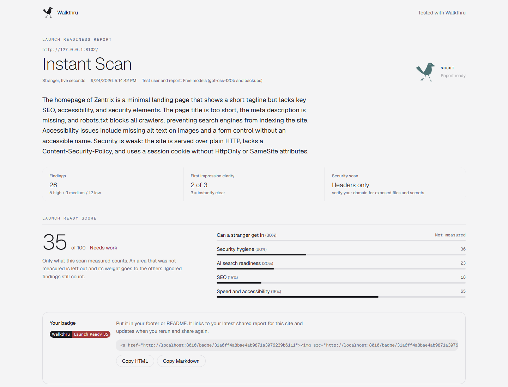
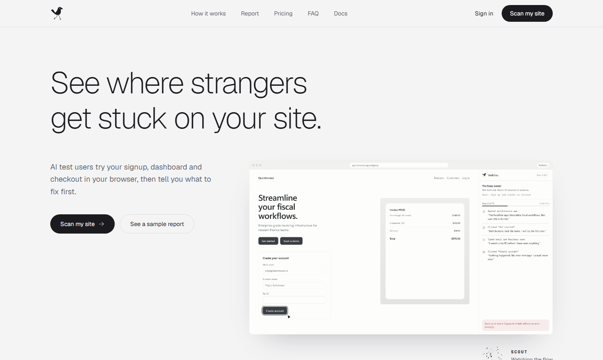
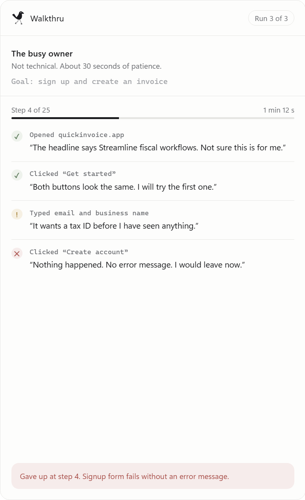
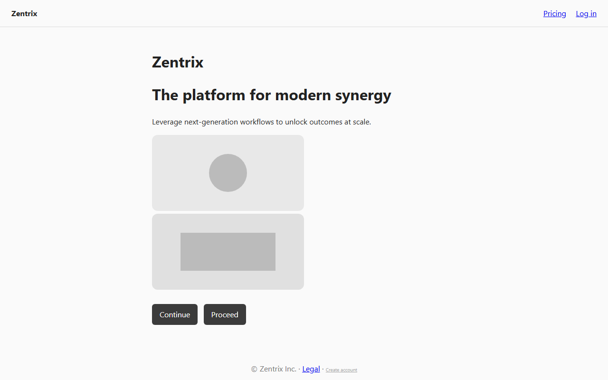
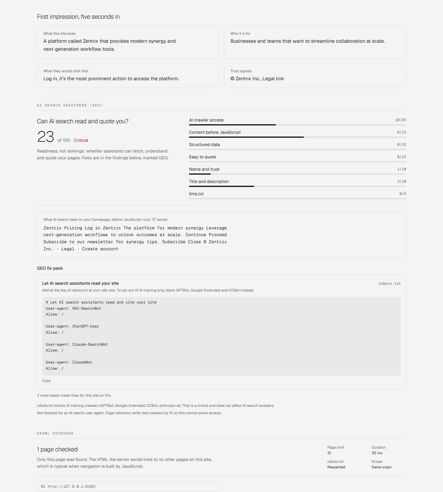
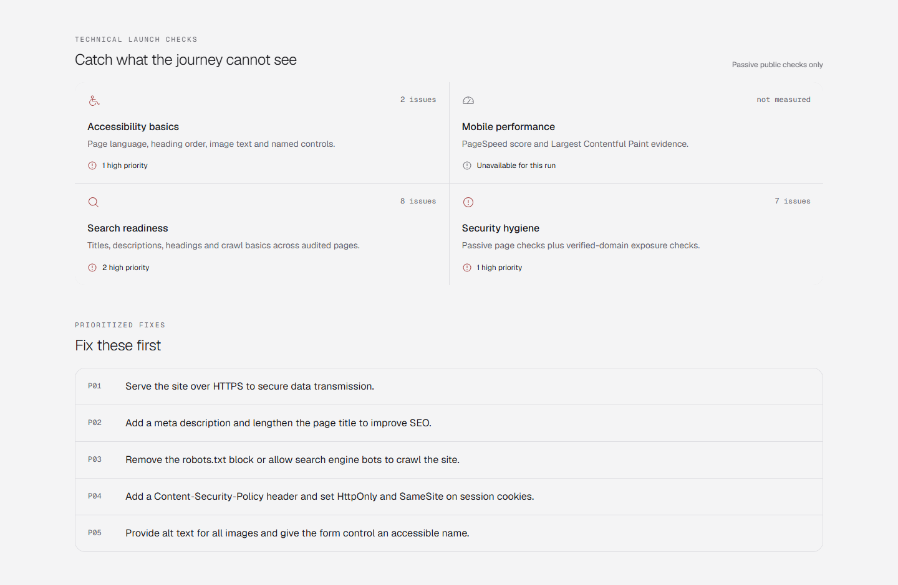
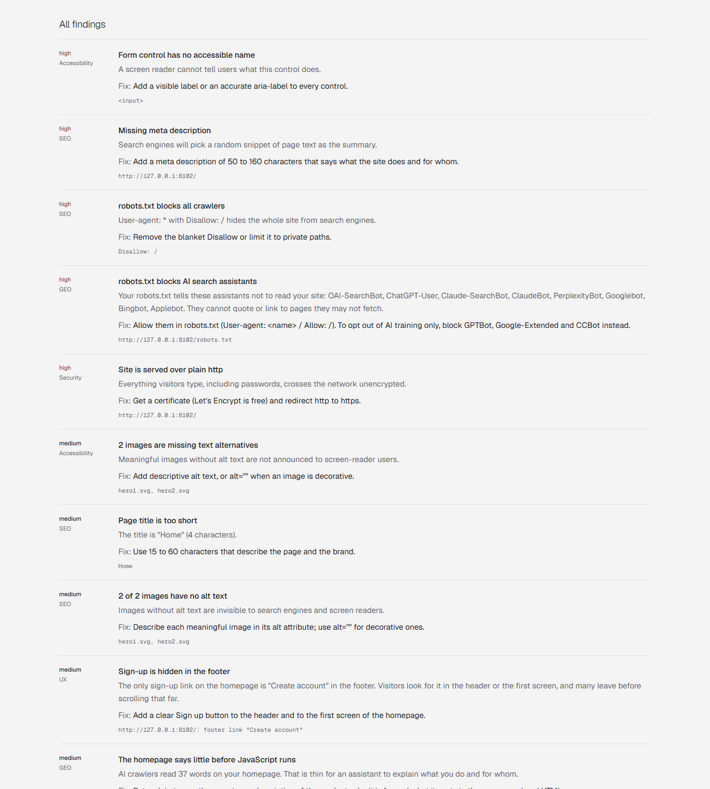
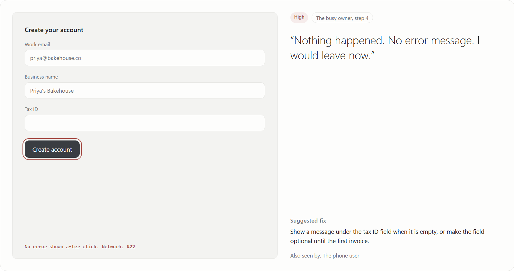
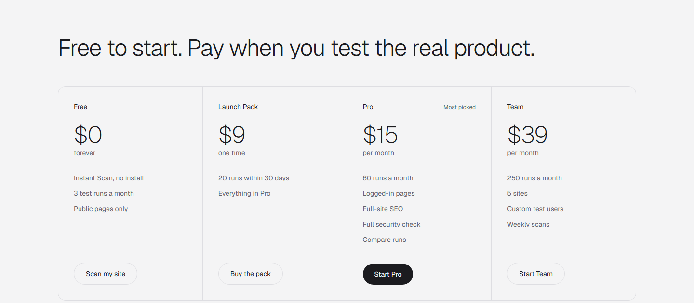

A complete briefing on what Walkthru is, how every part of it works, what each plan sells, where the business stands, and what a business co-founder would own.

Every chapter is written twice over. The main text explains things in plain words, as if you have never built software. The grey boxes marked Go deeper give the technical detail for anyone who wants it. You can skip every grey box and still understand the whole business.
app/plans.py, so an engineer can check every claim against the repository.Walkthru checks whether a website is ready for real visitors before and after it launches. A founder pastes an address, and Walkthru answers three questions in one report, with a ranked list of fixes.
| The question | How Walkthru answers it |
|---|---|
| 1. Can a stranger get in? | An AI test user (a piece of software that behaves like a first-time visitor) tries a real task on the site, such as "sign up" or "find pricing", inside the owner's own Chrome browser. It thinks aloud, and the report shows exactly where it got stuck, with screenshots. |
| 2. Can Google and AI search read you? | SEO checks (can Google find and list the pages) plus GEO checks (can ChatGPT, Claude, Perplexity and Google's AI answers read and quote the site). |
| 3. Are you leaking anything? | Passive security checks: missing protective headers, weak cookies, exposed files, secret keys left in public code. Walkthru only looks; it never attacks. |
On top of that: accessibility and speed checks, a signup email check, a single Launch Ready score from 0 to 100 with a public badge, and for paid plans a ready-made fix prompt the founder pastes into their AI coding tool (Cursor, Claude Code, Lovable, Bolt) to fix everything, then reruns Walkthru to prove it worked.
Millions of people now build real web apps by describing them to an AI. They can ship in a weekend. What they cannot easily do is watch a stranger use it.
These are illustrative questions, not quotes from real users. Collecting real ones is one of the co-founder's first jobs (chapter 20).
| Today's option | Why it falls short |
|---|---|
| Ask friends to try it | Friends are polite, already know the product, and only do it once. |
| Paid user testing (UserTesting, Maze) | Priced for companies. UserTesting sold for $1.3B in 2022, proof the need is real, but far above an indie budget. |
| Free tools: Lighthouse, securityheaders.com, Google Search Console | Each covers one slice, speaks in jargon, and none tries the signup flow. |
| AI user-testing tools (Meerkat, CanaryUsers, Swarm) | Test journeys only. No SEO, GEO or security. Need credentials for logged-in pages. |
Read this once. The rest of the document uses these words freely.
/.well-known/walkthru.txt. It unlocks deeper security checks and real form sends.The front door. Anyone pastes a web address on the homepage and gets a full report in seconds, with no account and no install.

POST /scans in app/main.py. Limits: 5 scans an hour per IP address (in memory) and FREE_SCANS_PER_DAY = 200 across all users (counted in the database). Crawler: app/scans/site.py. Report graph: app/agent/report.py, which fans out to the scans and joins at synthesize.The extension is how Walkthru tests the real product: signup, onboarding, dashboard, settings, checkout up to the payment button. The browser does the clicking on the owner's computer; the thinking happens on Walkthru's server.
A small bird called Scout appears in the corner of the tested page while it runs, so the owner can see what the test user is doing. Scout is invisible to the snapshot, so it never confuses the test.

| Test user | How the AI is told to behave | What they tend to find | Plans |
|---|---|---|---|
| First-time visitor | Never heard of the product, skims, gets impatient fast | Unclear headlines, hidden signup, confusing first steps | All |
| Phone user | Small screen, taps big obvious things, hates long forms | Tiny buttons, long forms, broken mobile menus | Paid |
| Careful buyer | Small-business owner deciding whether to pay; cares about pricing, trust, what happens next | Hidden pricing, missing trust signals, vague plans | Paid |
| Skeptic | Cautious developer who reads error messages, checks links, distrusts vague copy | Silent errors, dead links, marketing fluff | Paid |
Plus will add custom test users ("a 60-year-old first-time buyer on a phone") and several test users merged into one report.
apps/extension). lib/snapshot.ts numbers elements (open shadow roots included) and marks fields as filled, empty or checked, never their values. lib/redact.ts masks emails, long numbers and tokens. lib/execute.ts runs one action with the safety filter. The step loop lives in the side panel page, not the service worker, because Chrome suspends workers after about 30 s idle. Server: a LangGraph graph (app/agent/persona.py) with decide → interrupt → check; each step is one HTTP call to POST /runs/{id}/observe. Goal planner: app/agent/goal.py. Loop guards: three identical steps end as stuck, a third visit to the same page ends as looping (Walkthru's own stop, never a site finding). "Done" right after an action that changed nothing is questioned, then ends as gave_up. Permissions: activeTab, sidePanel, scripting, tabs, and an optional all-sites permission requested once at Start, used only for screenshots of the test tab.Everything Walkthru does ends in one report page. The screenshots below are a real Instant Scan of our "hard" test site (Zentrix), a fake startup page seeded with 22 known problems, generated today on the local build.

The tested address, the date, the test user, and which AI models ran (every report states this). Then a plain-language paragraph summarising what was found, and three quick numbers: total findings by severity, first-impression clarity (0 to 3), and how deep the security scan went.
The single number, with a bar for each area. Areas that were not measured are shown as "Not measured" and their weight moves to the others, so the score never punishes or rewards what was not checked. Below it, the badge with copy-ready HTML and Markdown.
What the site does, who it is for, what a visitor would click first, and which trust signals they noticed. This is the classic "5-second test" that UX researchers run with real people.
The GEO score out of 100 with its seven categories, then "What AI search sees": the literal text an AI crawler receives before JavaScript runs, with a word count. Seeing "37 words" of buzzwords is usually the moment a founder understands the problem. Below it, the GEO fix pack with copy buttons (free shows one fix and says how many more exist).

Which pages were checked, the page limit, how long it took, and whether robots.txt was respected. Honest about what was not checked, so a clean report never falsely implies the whole site is fine.

Every finding with its severity, category, a one-line explanation of why it matters, the fix, and the evidence (the URL, the header, the image file names). Repeated issues across pages are merged into one finding that names how many pages and which ones.

Disallow: / or hero1.svg, hero2.svg.walkthru-fixes.md, or Copy chat version for Lovable and Bolt.
Reports can be shared as a public link (/r/<id>), exported to CSV, emailed, and printed to PDF with every screenshot in a filmstrip. They work on phones too.
What Walkthru actually delivers, in the order a founder meets it.
AI test users try the real flow and report where they hesitated or failed, with the step, the screenshot and their own words. A UX finding is only allowed into the report if it points at a step where something actually went wrong: confusion of 2 or more, a visible error, a click that changed nothing, giving up, or a loop. A journey where everything worked has no UX findings, instead of padding.
Checked on up to 10 pages (Instant Scan and free) or 50 pages (paid): page title length, meta description, one H1 heading, canonical link, mobile viewport, language, accidental "noindex", image alt text, Open Graph tags for link previews, robots.txt and sitemap. Pages the test user visited are audited too.
Scored 0 to 100 in seven categories. All deterministic, so it costs nothing in AI calls and is identical on every plan.
| Category | Points | What is checked |
|---|---|---|
| AI crawler access | 25 | robots.txt allows the AI search bots (OAI-SearchBot, ChatGPT-User, Claude-SearchBot, ClaudeBot, PerplexityBot, Googlebot, Bingbot, Applebot); the homepage answers an AI user agent normally instead of blocking it |
| Content before JavaScript | 20 | The homepage HTML contains real text before JavaScript runs; key pages are not empty shells |
| Structured data | 15 | Valid JSON-LD, Organization or WebSite, a page-type schema (SoftwareApplication, Product, FAQPage, Article), enough useful properties |
| Easy to quote | 15 | One H1, descriptive H2s, a plain answer paragraph near the top, lists or tables, concrete numbers |
| Name and trust | 10 | Same name in title, og:site_name, schema and H1; about, contact, privacy or pricing links; public profile links |
| Title and description | 10 | Reuses SEO signals (findings stay in SEO, so nothing is reported twice) |
| llms.txt | 5 | Present and well formed; labelled "low measured impact" |
Bands: 0 to 35 critical, 36 to 67 foundation, 68 to 85 good, 86 to 100 excellent. Blocking training bots is reported as a choice, not a fault. The user-agent probe is worded carefully: a 200 response means "not blocked by user agent", because real edge networks verify bots by IP and we cannot prove access.
Fix pack: robots.txt rules, Organization, WebSite and SoftwareApplication JSON-LD filled from the site's own title and description, an llms.txt draft listing the audited pages, and a rendering fix picked by detecting the framework (Vite single-page app, Next.js, Lovable, Astro).
| Everyone, any site | Only on a domain the owner verified |
|---|---|
| HTTPS and redirect to HTTPS; security headers (CSP, X-Frame-Options, X-Content-Type-Options, Referrer-Policy, HSTS); cookie flags; server version leaks | Exposed files (.env, .git, backups); secret keys inside public JavaScript bundles, reported with the value masked |
Never: login brute force, injection attempts, port scans, load tests. The reason is legal and ethical: probing a site you do not own is an attack.
Inside a journey, the extension runs axe WCAG A/AA checks on the real rendered page and records LCP, CLS and INP at each step, so a finding can say "at step 3 on /signup, the email field has no label". Server-side static checks and Google PageSpeed are fallbacks. When something cannot be measured, the report says "not measured", never a false pass.
Reads the domain's SPF and DMARC records (free) and MX records (paid) through DNS over HTTPS. It also recognises a common trap: Supabase's built-in mailer allows very few emails per hour, so a journey error "email rate limit exceeded" becomes the fix "set up your own SMTP".
The paid feature that closes the loop. Walkthru turns the report into one instruction for the founder's AI coding tool. It is built by plain code from the stored report, never by an AI, so it cannot invent findings, and it costs nothing to make.
walkthru-fixes.md download.The owner can embed a live "Walkthru | Launch Ready 92" badge in their footer or README. It links to the latest public report for that site and refreshes (cached one hour) when they rerun and share again. Ignored findings still count, so the badge cannot be gamed. For the owner it is proof of quality; for Walkthru it is a free, permanent backlink and ad on every site that uses it. This is the main built-in growth loop.
app/agent/score.py computes the score in code from the stored report (weights UX 30, security 20, GEO 20, SEO 15, speed and accessibility 15; penalties per finding high 25, medium 10, low 3). GET /badge/{run_id}.svg and GET /badge/{run_id} in app/main.py. Status: built in the working copy on 24 September and visible in today's reports; not yet committed, so it counts as "in progress" (task V8).Verifying the domain (meta tag or file) is also how they prove ownership, which unlocks the deeper security checks and one real form send.
Every number in a report, and every performance number in this document, explained once.
| Number | What it describes | How to read it |
|---|---|---|
| Launch Ready score (0 to 100) | Weighted mix of measured areas: UX 30, security 20, GEO 20, SEO 15, speed and accessibility 15 | 85+ Launch ready, 60 to 84 Almost ready, under 60 Needs work |
| Area bars (0 to 100) | Each area starts at 100 and loses 25 per high, 10 per medium, 3 per low finding. GEO uses its own score. UX starts at 100 if the goal was reached, 50 if the test user gave up or got stuck | Low bar = where to spend time first |
| GEO score (0 to 100) | Points earned in the seven GEO categories | 0 to 35 critical, 36 to 67 foundation, 68 to 85 good, 86+ excellent |
| Clarity (0 to 3) | How quickly the AI understood what the site is from the first screen | 3 = instantly clear, 0 = could not tell |
| Confusion (0 to 3, per step) | How lost the test user felt at that step | 2 or more makes the step eligible for a UX finding |
| Severity | High: blocks users, leaks data or hides the site. Medium: hurts conversion or ranking. Low: polish | Fix high first; the fix prompt orders them for you |
| "AI search sees N words" | Words in the homepage before JavaScript runs | Under about 100 words usually means a thin page or a JavaScript shell |
| LCP / CLS / INP | Main content load time / layout jumping / click response | Good: under 2.5 s / under 0.1 / under 200 ms |
| Pages checked | Pages crawled vs the plan limit (10 or 50) | Anything not listed was not checked |
| Tokens | AI usage for the run | About 9,000 to 12,000 per report; a journey of 4 to 6 steps used 6,400 to 11,800 |
| Measure | Today | Notes |
|---|---|---|
| Instant Scan, small site | 11 to 43 s | Target is 20 s or less for 10 pages. Slower when free AI providers rate-limit |
| First step of a journey | 7.6 to 8.8 s | Was 13 to 19 s; cut by running domain verification in parallel and warming models at startup |
| Server time per later step | 1.4 to 6 s | Steps arrive about 5 s apart including the browser acting and the screenshot upload |
| Whole short journey | 25 to 33 s | 4-step signup on the easy site; portfolio contact goal in 33 s |
| Report after a journey | + up to ~1 min | The careful free report writer (Nemotron Ultra) is slow but writes the most accurate summaries |
| 50-page paid crawl | 13.9 s | python.org, 50 pages, measured |
An AI clicking around inside someone's logged-in account is dangerous if it is careless. Walkthru's limits are written in code, in two places (server and extension), not left to the AI's good behaviour.
| Risk | Rule, enforced in code |
|---|---|
| Paying, deleting, cancelling | Buttons with words like pay, buy, purchase, checkout, delete, remove, cancel subscription, transfer, unsubscribe are never clicked, on any page. On logged-in pages the agent does not even type into them. The run ends as a safe stop at that button. |
| Sending a form or message to a real person | Send and invite buttons run only on a domain the signed-in owner has verified, only after the owner clicks confirm in the side panel, and at most once per run. Everywhere else the run ends as "Stopped before sending". (This rule exists because a portfolio contact form was submitted once during early testing.) |
| Anonymous or public forms on sites the user does not own | Same as above: without verification, submit is never pressed. The agent fills the fields to prove the form works, then stops. |
| Leaving the site | Same-origin only. If a click leads to another domain (a new scheme, host or port), the extension stops the run and closes it with a reason. External links and new tabs are reported, not followed. mailto: and tel: links are reported as working contact methods and never opened. |
| Unsafe goals | The goal planner refuses goals that ask to pay, delete, cancel, spam, attack or visit another website, with an error, before a run is counted. Checked live: "delete my account and buy pro" was refused in 0.5 s. |
| CAPTCHAs and bot checks | The snapshot flags a CAPTCHA and the agent stops. It never tries to solve one. |
| Endless loops | Three identical steps end as stuck; a third visit to the same page ends as looping; 12 steps (free) or 30 (paid); 4 minutes total. |
| Personal data | Emails, long numbers and key-like strings are masked in the browser before upload. Field values are never sent, only "filled" or "empty". Screenshots mask form fields and hide Scout. Signups use a fake test identity. |
| Attacking sites | Security checks are passive only. Deep checks need domain verification. The scanner blocks private network addresses (SSRF protection) at every redirect. |
| Blaming the site for Walkthru's own stops | Safe stops, loops, the owner pressing Stop and CAPTCHA stops are Walkthru's limits and are never reported as site problems. |
| Data kept forever | Screenshots expire after 30 days. Owners can delete any run, export all their data, or delete their account. |
app/agent/safety.py (DESTRUCTIVE, SENDING) are mirrored in apps/extension/lib/execute.ts; the server's persona._enforce and the extension's executor both refuse, so a buggy or manipulated model cannot bypass one layer. Same-origin compares scheme and host. Domain verification: GET /verification returns a per-account token for a meta tag or /.well-known/walkthru.txt.Prices confirmed by the founder on 24 September 2026. The founding price applies to the first 50 customers, locked for 12 months. At launch, paid access is sold as founder-approved 30-day passes through Dodo, with no automatic renewal (chapter 15 explains why).
| Free | Launch Pack | Pro | Plus | |
|---|---|---|---|---|
| Price | $0 | $9 once | $19/mo ($15 founding) | $49/mo ($39 founding) |
| AI for test user and report | Free models | Claude Haiku 4.5 | Claude Haiku 4.5 | Claude Haiku 4.5 |
| Instant Scan | 5 an hour, 10 pages | Yes | Yes | Yes |
| Test runs | 3 a month | 20 in 30 days | 40 a month | 150 a month |
| Steps per run | 12 | 30 | 30 | 30 |
| Pages the test user may enter | Public only | Public + logged-in | Public + logged-in | Public + logged-in |
| Test users | First-time visitor | All 4 | All 4 | All 4 + custom |
| Sites per month or pass | 1 | 1 | 2 | 5 |
| GEO score | Homepage, top 3 fixes | Full site | Full site, 50 pages | Full site, 50 pages, every site |
| "What AI search sees" | Yes | Yes | Yes | Yes |
| GEO fix pack | 1 fix preview | Yes | Yes | Yes |
| Agent fix prompt | Locked (shows count) | Yes | Yes | Yes |
| Launch Ready score and badge | Yes | Yes | Yes | Yes |
| SEO | 10 pages | 50 pages | 50 pages | 50 pages |
| Security | Headers, TLS, cookies | + exposed files, leaked keys (verified) | Same | Same |
| Signup email check | SPF, DMARC | Full | Full | Full |
| Rerun and compare | No | Yes | Yes | Yes |
| Ignore a finding | No | Yes | Yes | Yes |
| One real form send (verified, confirmed) | No | Yes | Yes | Yes |
| Signup funnel numbers planned | No | Yes | Yes | Yes |
| Landing copy review planned | No | Yes | Yes | Yes |
| Competitor side by side planned | No | 3 competitors | 3 competitors | 3 per site |
| Walkthru MCP server planned | No | No | No | Yes |
| Weekly GEO/SEO watch + deploy hook planned | No | No | No | Yes |
| Report export | Web report | PDF with your logo | ||
| Shareable public report | Yes | Yes | Yes | Yes |

app/plans.py holds the plans; POST /runs ignores whatever tier the browser claims and returns 403 (logged-in or persona not allowed), 402 (runs used up) or 429 (daily free capacity used). Checked live: a free account claiming to be paid was refused. GET /me/plan feeds the side panel. scripts/grant_plan.py EMAIL pro grants a free test pass. Claude Haiku 4.5 is wired through Google Cloud and switches on when CLAUDE_VERTEX_PROJECT is set; until then paid runs also use the free chain.Short answer: yes, it is a real report, not a placeholder. About 80% of it is solid, production-grade checking. The AI-written 20% is useful but uneven on free models, and that is exactly the part paid plans improve.
Disallow: / in robots.txt, a title of 4 characters, the two image file names, the cookie called "session" missing HttpOnly and SameSite. These are the same facts Lighthouse or securityheaders.com would report, in plain language, in one place, with the fix.| Part of the free report | Worth to a real founder | Could they get it free elsewhere? |
|---|---|---|
| GEO score + what AI sees + 1 fix | High. Most founders have never checked it, and SPAs usually fail | Partly, via separate GEO tools, mostly paid |
| Security headers, cookies, HTTPS | Medium. Quick wins, good hygiene | Yes (securityheaders.com, Mozilla Observatory) |
| 10-page SEO audit | Medium. Catches embarrassing mistakes like a blanket robots block | Yes (Lighthouse, many SEO checkers) |
| First impression | Medium, when correct; see the clarity miss above | Not in one click |
| 3 public journeys a month | High when it catches a broken signup; low for a flow that works | Competitors give more free runs (Meerkat about 170 in month one) |
| All of it in one link with a score and badge | The real value. One place, plain words, shareable | No single tool combines these |
Four people, four stories. Details are illustrative, not real customers.
Built a habit tracker with Lovable over three weekends. Runs a free Instant Scan: GEO 18, "AI search sees 6 words". The app is a JavaScript shell. Buys the $9 Launch Pack, runs the careful-buyer and phone-user journeys through signup and the first dashboard, finds the signup confirmation email never arrives (Supabase mailer limit), pastes the fix prompt into Lovable, reruns: 7 fixed, 1 new. Puts the Launch Ready badge in the footer before launch day.
Runs a booking site built by a freelancer. Not technical. Uses Instant Scan monthly; the plain-language report tells them what to ask the freelancer, and the fix prompt is something they can forward. The security section catches the login cookie without HttpOnly.
Two founders, 300 users, shipping every week. Pro plan. After each release they rerun "sign up and create a project" as a skeptic on staging, logged in, without handing any password to a vendor. The comparison tells them within minutes whether the release broke onboarding. Later, the MCP server lets their Claude Code agent run the check itself before each deploy.
Hands 3 to 5 sites a month to clients. Plus plan. Every handover includes a white-label PDF with their own logo showing the Launch Ready score, SEO, GEO and security. Weekly watch emails them if a client's developer later blocks AI crawlers by accident. It is a reason to sell a maintenance retainer.
Three parts: a website, a Chrome extension, and a server that holds the brain. A hosted database keeps accounts and reports. The design goal is near-zero running cost until there is revenue.
| Part | Technology | State |
|---|---|---|
| Web | React 19, Vite, TypeScript, Tailwind v4, GSAP animation | Built: landing, login, dashboard, reports, docs, privacy, terms, security pages |
| Extension | Chrome MV3, WXT, React, axe-core | Built; not yet on the Chrome Web Store |
| API | Python, FastAPI, LangGraph | Built; runs locally, not deployed |
| Database, auth, files | Supabase (Postgres with row-level security, magic link, Google and GitHub sign-in) | Live on the free tier; OAuth providers still to enable |
| AI models | Free chain: Groq gpt-oss-120b, gpt-oss-20b, Qwen, then Gemini; Nemotron 3 Ultra on OpenRouter writes most reports. Paid: Claude Haiku 4.5 on Google Cloud | Free chain live; Claude wired, switched off |
| Payments | Dodo Payments | Designed (payment.md), not built |
| Hosting | Vercel (web), Oracle Always Free VM or a ~$5 VPS (API) | Not started |
| Evals | Fixture sites with seeded traps, a trap scorer, LangSmith tracing | Built |
apps/web, apps/api, apps/extension, evals. The API reaches Supabase over its HTTPS Data API because direct Postgres was unreliable from the founder's network. Agent state is in memory by default; CHECKPOINTER=postgres for production. Free-provider ceiling: Groq allows about 8,000 tokens a minute per model and about 1,000 requests a day, so free journeys are capped at FREE_RUNS_PER_DAY = 90 and scans at 200 a day. Tests: 171 API, 30 extension; builds and lint green."AI users test your site" is a crowded, young category. None of the players has won. Walkthru's opening is the combined launch check and logged-in testing without credentials.
| Name | Price | What they sell | Threat |
|---|---|---|---|
| CanaryUsers | Free 100 credits; $9, $19, $49/mo | A "flock" of AI users on every deploy; logged-in flows from $9 | high same buyer, same price |
| Meerkat | Large free tier; $49, $199/mo | AI personas in a real browser; findings across releases | high generous free tier |
| Swarm | 5 free runs; $150/mo | Feedback in 10 minutes, code fixes; VC-backed | medium different buyer |
| Uxia | 1 free test, custom | AI testers for prototypes and live sites | low |
| Octomind (indirect) | $89 to $589/mo | Automated QA test generation | low |
| Otterly.AI (indirect, GEO) | From $29/mo | AI visibility tracking and GEO audits | low never tests flows |
| Feature | Meerkat | CanaryUsers | Swarm | Otterly | Walkthru |
|---|---|---|---|---|---|
| AI users in a real browser | Yes | Yes | Yes | No | Yes |
| Logged-in flows | Yes | Yes | Yes | No | Yes (paid) |
| No credentials shared | Unknown | Unknown | Unknown | n/a | Yes |
| SEO | Unknown | Unknown | Unknown | Partial | Yes |
| GEO | Unknown | Unknown | Unknown | Yes | Yes |
| Passive security | Unknown | Unknown | Unknown | No | Yes |
| Compare across releases | Yes | Partial | Unknown | No | Yes (paid) |
| Runs on deploy | Yes | Yes | Unknown | No | Planned (Plus) |
| Several personas per run | Yes | Yes | Yes (10) | No | 1 today; planned |
| Free tier | ~170 runs month one | ~2 deep scans | 5 lifetime | n/a | Instant Scan + 3 runs |
"Unknown" means the competitor's public pages do not say. Meerkat's own comparison article claims no persona tool lists SEO or security; treat it as their claim.
| Dimension | Score /5 | Why |
|---|---|---|
| Problem severity | 3 | Real, but peaks around launch |
| Market size | 4 | Millions building with AI, plus agencies |
| Willingness to pay | 2 | Price-sensitive buyers; competitors anchor at $9 |
| Competition gap | 2 | Four direct competitors; gap is the combined report |
| Distribution | 3 | Instant Scan is a strong hook; extension is friction |
| Timing | 4 | AI-built apps and AI search both peak now |
| Founder fit | 3 | Proven builder; little sales experience. The co-founder closes this gap |
| Total | 21/35 | Promising with gaps. Prove people will pay before building more |
Freemium: a genuinely useful free tier as the demo and the marketing, flat paid plans with a run allowance, and a one-time pack for people who launch once.
| Offer | Price | Dodo fee | Net | Runs | AI budget cap (25% of net) | Worst case at $0.20/run |
|---|---|---|---|---|---|---|
| Launch Pack | $9.00 | $0.76 | $8.24 | 20 | $2.06 | $4.00 |
| Pro, founding | $15.00 | $1.00 | $14.00 | 40 | $3.50 | $8.00 |
| Pro | $19.00 | $1.16 | $17.84 | 40 | $4.46 | $8.00 |
| Plus, founding | $39.00 | $1.96 | $37.04 | 150 | $9.26 | $30.00 |
| Plus | $49.00 | $2.36 | $46.64 | 150 | $11.66 | $30.00 |
Measured AI cost with Claude Haiku 4.5 (from real run sizes at about $1.10 per million input and $5.50 per million output tokens on Google Cloud, to be confirmed at setup): a typical run costs $0.02 to $0.04, a full 30-step run about $0.08. Pro used fully costs about $1.40 a month (worst $3.08) against $17.84 net. Plus about $5.43 (worst $11.73) against $46.64. Both inside the 25% cap. GEO and the fix prompt cost nothing, being plain code.
| Plan | Net | Likely AI cost | Gross margin |
|---|---|---|---|
| Launch Pack | $8.24 | ~$0.60 | ~85% |
| Pro | $17.84 | ~$1.40 | ~87% |
| Plus | $46.64 | ~$5.43 | ~84% |
Fixed cost is about $6 a month (a $5 VPS if Oracle's free VM does not work, plus the domain). One Pro customer covers hosting. A $1,000 a month founder income needs about 64 Pro or 26 Plus customers. At 80% Pro and 20% Plus the blended ARPU is $25 at list price, about $20 at founding prices.
The founder has no credit card and cannot risk an unknown AI bill before revenue. So at launch: a user requests paid access, the founder approves, the user gets a private one-time checkout link, and a verified Dodo webhook activates a 30-day pass with a fixed number of runs and a hard AI cost cap. No auto-renewal, no overage, no surprise bills in either direction. Self-serve monthly subscriptions open only after 10 reconciled passes, 30 days of real cost data and a tested spend cap.
Assumes the first 50 customers pay founding prices (blended $19.80) and later customers $25; excludes one-time Launch Packs; counts paying customers at month end after churn.
| Scenario | Month 3 (Jan 2027) | Month 6 (Apr 2027) | Month 12 (Oct 2027) |
|---|---|---|---|
| Conservative | 10 paying, ~$200 MRR | 25, ~$500 | 60, ~$1,240 |
| Base | 25, ~$500 | 70, ~$1,490 | 200, ~$4,740 |
| Optimistic | 50, ~$990 | 150, ~$3,490 | 450, ~$10,990 |
What the base case requires: at a 3% scan-to-paid conversion, 200 customers need roughly 6,700 Instant Scans over the year, about 560 a month. The free-capacity cap (200 scans a day, about 6,000 a month) supports that. Validation gate before anything else: 5 paid out of the first 100 scans.
Walkthru can launch for well under $100 in cash. The scarce resource is time, not money.
| Item | Cost | When | Notes |
|---|---|---|---|
| Domain | ~$10 to $20 / year | By 5 Oct | Registrar-dependent; not a quote. Run a quick trademark search on "Walkthru" first |
| Chrome Web Store developer account | $5 once | Now | Review can take days; submit by 8 Oct |
| Google Cloud prepayment (Claude) | ₹500 to ₹1,000 | Session 6 | UPI prepayment; covers the measured Claude comparison (~$1 to $2) and early paid runs |
| API server | $0 or ~$5 / month | By 6 Oct | Oracle Always Free VM, or a small VPS |
| Supabase, Vercel, Resend | $0 | Now | Free tiers; watch quotas |
| Dodo Payments | $0 setup | Start verification now | 4% + $0.40 per sale; $1 per refund; $30 per dispute; payout fees below $1,000 |
| Headline ad test (optional) | $0 to $100 | Oct | Experiment A3 on Reddit ads |
| OpenRouter credit (optional) | $10 | If report volume grows | Lifts the free model limit from 50 to 1,000 requests a day; needs an international card or crypto |
| Total to launch | ~$30 to $150 | Estimate, plus founder and co-founder time |
Built with the go-to-market founder skill for a $0 to $500 monthly budget and a 20 October launch. The short version: give away great scans in public, measure whether the extension kills the funnel, and let every shared report and badge advertise the product.
| # | Test | How | Pass if |
|---|---|---|---|
| A1 | Will anyone pay once? | Post 30 free Instant Scans of real launches in Indie Hackers, r/SaaS and r/SideProject threads over 10 days, with one line: "Want AI users to test your signup? Founding Launch Pack, $9." Take payment by Dodo payment link or UPI. | 5 paid of the first 100 scans |
| A2 | Does the extension kill the funnel? | 20 beta users load the unpacked extension with a 3-line guide; count clicked, installed, finished. | 5 or more finish a run within 48 h (else build the cloud runner) |
| A3 | Is GEO the stronger hook? | Same offer, two headlines: "Can ChatGPT read your site?" vs "Find where users get stuck". Count scan starts by link tag. | GEO headline gets 1.5x more starts, then leads the landing page |
Audience building posts (before launch):
Waitlist: only for Plus ("weekly watch and MCP, opening in November"). Everything else is usable on day one.
Assets: a 60 to 90 second demo video (paste URL → GEO shock "AI sees 6 words" → extension journey → fix prompt → rerun shows fixed); one public demo report; 3 beta quotes collected from A1 and A2 users with permission.
| Platform | Tactic |
|---|---|
| Hacker News | Show HN (it is usable without sign-up, which HN rules favour): "Show HN: Walkthru, a launch check that shows what ChatGPT sees on your site". The founder answers every technical comment for the first 3 hours: the safety model, grounding, passive-only security. Never ask for upvotes; HN rules forbid it. |
| Product Hunt | Launch at 12:01 am Pacific (Tuesday to Thursday are busiest). A hunter is not required. Prepare gallery images from the real report, the demo video, a founding-price offer and a maker comment telling the story. The co-founder runs the day: replies, thank-yous, sharing to communities. |
| r/SaaS limits self-promotion to once every 60 days and has a weekly share thread: use the thread. r/SideProject and r/indiehackers accept projects with a story. Format: problem, what we found scanning 30 apps, free link, no hard sell. | |
| X | Thread: 1) the GEO shock screenshot, 2) how the test user works, 3) safety rules, 4) before/after rerun, 5) link. Tag the builder communities (Lovable, Bolt, Cursor) only where the content genuinely helps their users. |
| # | Channel | CAC (Estimate) | Time to results | First action this week |
|---|---|---|---|---|
| 1 | Free scans posted in founder communities (IH, r/SaaS weekly thread, r/SideProject, Lovable and Bolt communities) | $0, ~1 h per customer | Days | Scan 10 apps from this week's launches and send owners their report |
| 2 | Badge and public-report backlinks | $0 | Weeks to months | Ship V8 and ask every beta user to add the badge |
| 3 | Launch platforms (Show HN, Product Hunt) | $0 | One day spike | Draft the Show HN text and PH gallery |
| 4 | Search content around GEO ("can ChatGPT read my site", "Lovable SEO") | $0, writing time | 2 to 3 months | Publish one guide with a free-scan call to action |
| 5 | Agency outreach (small web agencies, Webflow and Framer freelancers) | $0 to $50 | 1 to 2 months | Send 20 agencies a free white-label-style report of one client site |
Content ideas: "What ChatGPT sees on 30 AI-built apps" (data study); "Lovable/Bolt SEO and GEO checklist"; "Why your Supabase signup emails never arrive"; "Security headers in 5 minutes for Vercel apps"; "We let an AI try to sign up to 20 Product Hunt launches". Each becomes an X thread, a Reddit post and a newsletter pitch.
Partnerships: (1) template and course creators in the Lovable, Bolt and Cursor ecosystems, who can bundle a free scan in their launch checklists; (2) MCP directories and the Cursor/Claude Code tool listings once the MCP server ships. Product-specific tactic: "Launch Ready" badge leaderboard of the week's launches, with owners' permission.
| Metric | Day 30 | Day 60 | Day 90 | Tool | If below target |
|---|---|---|---|---|---|
| Instant Scans per week | 150 | 300 | 500 | Supabase runs table | Post more public scans; test the GEO headline |
| Scan → signup | 15% | 20% | 25% | Supabase auth + runs | Make the locked fix prompt more visible in reports |
| Install → first finished run | 25% | 35% | 40% | Runs by user | Onboarding video; build the cloud runner |
| Paying customers | 5 | 15 | 30 | Dodo dashboard | Interview 5 non-payers; revisit the offer |
| Paid users who rerun within 14 days | 40% | 50% | 60% | Runs with a comparison | Rerun reminder email; weekly watch sooner |
All targets are Estimates. Walkthru has no product analytics yet; these numbers come from the database. Adding privacy-safe analytics is a pre-launch task.
Quality first, then payments, then deploy and launch, then Plus. Dates are from the roadmap; the buffer week exists for Chrome Web Store review and Dodo verification, which are outside our control.
| When | Work | What it means |
|---|---|---|
| Now to 8 Oct | Polish and harden | Commit the Launch Ready score and badge (V8); production-ready agent state (CHECKPOINTER=postgres); a UI spacing pass; fix the free-model clarity misfire and local http noise; configure PageSpeed. |
| 6 to 8 Oct | Deploy, domain, store | Buy the domain; web on Vercel; API on the Oracle VM with process supervision; production CORS and extension origin; error logging and health checks; submit to the Chrome Web Store on 8 Oct. |
| 6 to 8 Oct | Security tightening | Rotate Supabase secrets; two-factor on every admin account; one API process so the per-address scan limit holds (or move it to the database); verify row-level security on every table; audit extension permissions; legal pages reviewed; Google and GitHub sign-in enabled. |
| 11 to 13 Oct | Dodo payments (V10) | Test mode first: access request → founder approval → private one-use checkout → signed, idempotent webhook inserts the pass → refunds suspend it. Tests prove duplicate, forged and out-of-order webhooks do nothing and a redirect without a webhook grants nothing. Then live mode once Dodo verifies the business. |
| 6 to 15 Oct | Claude on for paid plans | Google Cloud project with UPI prepayment; measured comparison of Claude Haiku 4.5 vs the free chain on the same journeys ($1 to $2); only then claim paid reports are better. |
| 14 to 18 Oct | Close-out | Evidence and PDF verified with real screenshots (V7); signup funnel numbers (V18); landing copy review (V19); new landing page and pricing (V9); stranger test in production. |
| 20 Oct | Launch | Show HN, Product Hunt, Indie Hackers, r/SaaS, r/SideProject. 27 Oct at the latest. |
| 21 Oct to 1 Nov | Weekly watch + deploy hook (V12) | A weekly server-side scan per saved site; a Vercel or Netlify deploy hook; email only when something changes. |
| 2 to 8 Nov | Walkthru MCP server (V20) | Plus users paste a URL and a personal API key into Claude Code or Cursor. Tools: scan_site, get_report, get_fix_prompt, rerun, list_runs. Keys shown once, stored hashed, revocable, same limits as the web. |
| 9 to 15 Nov | Competitor side by side (V21), branded PDF, open Plus | Passive scans of up to 3 competitor URLs next to yours; white-label PDFs; Plus waitlist opens by 22 Nov. |
| 16 to 22 Nov | Custom test users (V13) | Define your own persona; several personas merged in one report. |
| Late Nov (if needed) | Cloud runner (V14) | Only if fewer than 25% of beta users finish a run: public journeys without installing anything. |
| Dec onward | Self-serve checkout | After 10 reconciled passes and 30 days of cost data. Then: preview-deploy check (GitHub Action), findings to GitHub Issues or Linear, AI citation tracking as a Plus add-on. |
The pricing research suggested Plus include 3 seats sharing reports; the current plan table does not list seats. Today each account is one person, and reports are shared by public link. Shared team workspaces (invite teammates, shared sites and runs, roles) would need a new team table and permission rules. Open decision: add seats to Plus before it opens in November, or keep Plus single-seat and use MCP plus shared links as the "team" story. Recommendation: ship Plus with shared links and MCP first, add 3 seats only if agencies on the waitlist ask for it.
| Risk | Level | Mitigation |
|---|---|---|
| Nobody pays | High | A1 before billing code: 5 of 100 scans at $9. If it fails, change the offer before building more. |
| Extension install kills the funnel | High | A2 gate at 25%; cloud runner for public journeys. |
| CanaryUsers or Meerkat add SEO and GEO | Medium | Ship first, own "launch check" and the no-password logged-in story, build the badge loop. |
| A platform (Vercel, Lovable) builds this in | Medium | Be the neutral check across all builders; partner with their ecosystems. |
| Free AI capacity runs out | Medium | Daily caps with clear messages; paid runs on paid capacity funded by revenue. |
| A wrong AI judgement damages trust | Medium | Grounding; tune the clarity rule; Claude for paid; "which models ran" on every report. |
| The agent does something harmful | Low | Two-layer code rules, verified domains, one confirmed send, passive security only. |
| Chrome Web Store or Dodo delays | Medium | Submit 8 Oct; start Dodo verification now; one buffer week. |
| Name or trademark conflict | Unknown | Search before buying the domain. |
The product is built. The hardest remaining problem is not code; it is getting founders to try it, pay for it and tell others. Walkthru is looking for a business co-founder to own everything that is not engineering.
| Period | Focus | Done when |
|---|---|---|
| Weeks 1 to 2 | Run experiment A1: post 30 free scans of real launches, collect replies, take the first $9 payments by payment link. Recruit 20 beta users for A2. Talk to 10 founders about how they check a launch today. | 100 scans done, first payments or a clear "no", 10 interview notes |
| Weeks 3 to 4 | Launch prep: Product Hunt page, Show HN draft, demo video script, 3 beta quotes, launch-day community list, onboarding email sequence. | Launch kit ready by 18 Oct |
| Week 5 | Launch week: run Product Hunt and communities; the technical founder handles HN and bugs. | First 10 paying customers |
| Weeks 6 to 13 | Weekly content, agency outreach (20 a week), badge adoption, founder-approved pass operations, churn interviews, Plus waitlist. | 30 paying, Plus waitlist of 50 |
docs/decisions.md).Equity and vesting are for the two founders to agree, ideally with advice. Common practice among early-stage startups is founder equity vesting over 4 years with a 1-year cliff, so both people earn their share over time. A trial project first (for example, running A1 together over two weeks) is a low-risk way to test the working relationship.
[Placeholders for the founder to fill: founder bio and track record, links to past projects, contact details, preferred working hours and location.]
SPEC.md (plans, GEO rules), ROADMAP.md (weak points, dates), ARCHITECTURE.md (modules), payment.md (billing and costs), CURRENT_STATE.md (what is done), docs/decisions.md (measurements: model bakeoff, Checkpoint B, Claude costs, latency).founder/competitor-matrix.md, founder/pricing-strategy.md, founder/validate-idea.md, plus founder/go-to-market.md and founder/product-brief.md written with this briefing.The source is docs/briefing/walkthru-briefing.html with images in docs/briefing/img. Print it with headless Edge: msedge --headless=new --no-pdf-header-footer --print-to-pdf=Walkthru-Briefing.pdf docs/briefing/walkthru-briefing.html.